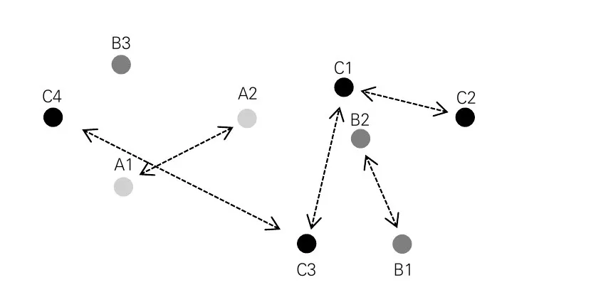
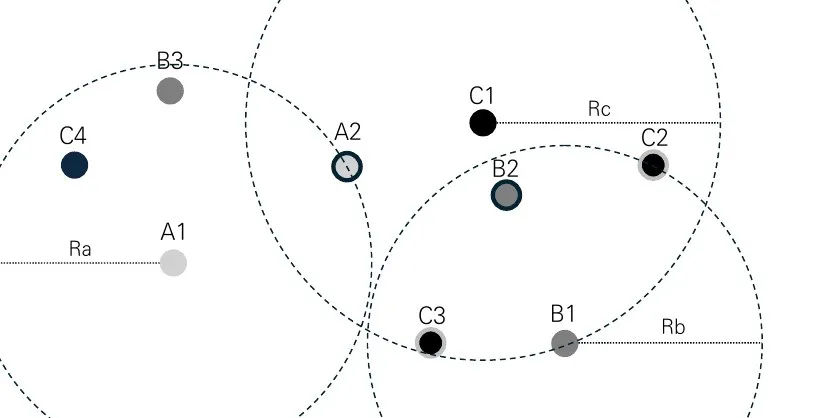
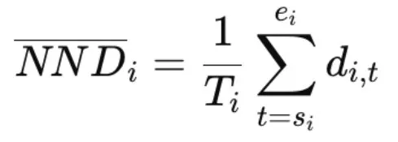

Density and Closure
업종별 공간 밀집도와 폐업, 강남구 시계열 분석
Industry-Specific Spatial Density and Business Closure, A Spatio-Temporal Analysis of Gangnam-gu, Seoul
같은 업종이 얼마나 몰려 있는지가 개업 후 3년 생존에 주는 영향을 업종마다 따로 따졌다.

2016년 강남구에서 개업한 22개 업종 7,647개 사업체를 LOCALDATA로 3년간 추적했다. 영업한 날마다 같은 업종의 최근접 거리와 인접 사업체 수를 재고, 업종별로 t-검정과 로지스틱 회귀를 했다.
3년 안 폐업률은 출판사 3.4%에서 즉석판매제조가공업 88.8%까지 벌어졌다. 즉석판매제조가공업과 휴게음식점은 밀집할수록 불리했고, 유통전문판매업은 오히려 생존 확률이 높았다.
Competition, Day by Day

